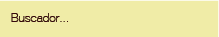
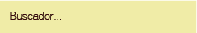
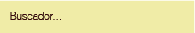
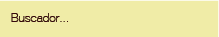

 

La cerveza es un gusto adquirido, eso es claro, un gusto que aprendemos a conocer al lado de los hermanos, los padres, la familia o esos amigos de toda la vida. Una cerveza es algo más que una bebida de sabor amargo, es más que lúpulo y cebada. Los que conocen el verdadero significado de una cerveza, saben lo que implica una invitación a una pola. Tomarse una pola nunca deberá ser un suplicio, no deberá implicar un padecimiento, una incertidumbre o un desconsuelo. Tomarse una pola no es solo beber para perder el conocimiento y olvidar las penas. Tomarse una pola deberá siempre ser la mejor forma de aligerar la carga o aminorar el paso. Tomarse una pola es la mejor forma de rendir un homenaje a lo vivido, celebrar lo alcanzado y soñar con el futuro. Tomarse una pola es el reecuentro con el amigo y el encuentro con el universo que es el desconocido. Tomarse una pola será siempre (para mí) un gesto sublime de compartir con el otro, una historia, una anécdota, una alegría, una tristeza, o una pola en sí misma. Tomarse una no debería representar un problema, pero aun así, a veces, y solo a veces ¿por qué es tan duro tomarse esa pola? Este sitio está pensado para brindar un pequeño acercamiento al mundo de la cerveza y de paso aprovechar para que usted, querido visitante, disfrute de espacios diferentes para saborear sus cervezas favoritas, de paso, emprenda un viaje de descubrimiento y dese cuenta de todo lo que se está perdiendo por pedir cada fin de semana, la misma cerveza de siempre. Un último pensamiento que quisiera compartir con ustedes, qué rico una pola o treinta y seis. Cheers. Mauro Duque